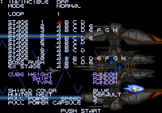

日本語 ｜ English
グラディウスIII 改造ROM パッチ
純正313版ベースの改造（隠しメニュー・面選択・キューブラッシュ ほか）。このページはパッチ（差分）だけを配布しています。ROMデータは含みません。
⚠ v0.5.2 から、メニューに入るには解除のコマンドが要りますデモ・タイトルの間に レバー上＋A → 両方離す → レバー下＋A → 両方離す（各3秒以内。音が鳴れば解除）。押すと最新版の説明へ
▶ ご意見・ご要望・不具合報告テストプレイの報告もこちらで書けます。感想や「こうなってほしい」も、気軽にどうぞ
▶ ステレオの聞き比べ（試作）全35曲・10パターンをボタン1つで切り替え。チャンネルごとの細かい設定と、曲ごとの評価の記録もできます（ヘッドホン推奨）
▶ キューブラッシュの解析結果はこちら高さの決まり方・2880通りの並び（H／S／T）・処理落ちによるずれ（LAG）・くっつく判定。H・S・T を選んで99個の並びを見られます
▶ 使い方（ゲーム内）：メニュー・装備コマンド・ポーズメニュー・キューブラッシュ
まず解除する（v0.5.2 から必要）
- ① レバー上＋パワーアップ② 両方離す③ レバー下＋パワーアップ④ 両方離す → 音が鳴れば解除P＝パワーアップ（A）ボタン。デモ・タイトルの間（ゲーム中でないとき）に入れます。各段階3秒以内
- オートロック：解除したまま遊ばずに約120秒たつと、自動でロックに戻ります（ロックのコマンドはありません）。遊んでいる間とメニューの間は数えません。
- 解除していないときは、レバーを入れて START を押しても純正どおりに始まります（メニューは出ません）。
隠しメニューに入る
- 解除してからクレジットを入れて、レバーを入れたまま START を押します。レバーを入れずに START なら純正どおりに始まります。レバー上＋START：既定値のメニューレバー下＋START：前回の設定のメニュー

メニュー
- 上下で項目を選び、左右で値を変え、START で開始します（メニューからデモには戻りません）。開始後はタイプ選択（ビギナーは選べません）と装備選択の画面になります。
- 項目：INVINCIBLE（無敵）／MODE（NORMAL・CUBE RUSH）／LOOP（周回）／面とエリアの表／CUBE HEIGHT・SHIFT・TYPE（キューブラッシュの並び。キューブラッシュのときだけ選べます）／SHIELD COLOR（シールドの色）／HUNTER NEXT（最初に出るオプションハンターの種類）／FULL POWER SPEED（装備コマンドを使ったときのスピード）／FULL POWER CAPSULE（装備コマンドを使った後のカプセルゲージの位置）。
- 面とエリアの表：左右でエリアを選びます。英字（A〜）は元のエリアの始まりです。10面の ❶（白抜き数字）は、ボスラッシュの後に下へ降りたところです。BOSS RUSH の行は10面のボスラッシュの区間の途中（A〜E＝2〜6体目のボスの手前）から始めます（そこで死ぬと、その手前の地点から再開します）。EX STAGE は A＝グラディウス面・B＝サラマンダ面です。
プレイ中の装備コマンド（START を短く押す）
- ミサイル・レーザー・オプション4・シールドレーザーの代わりにダブルノーマルショットのフル装備（レーザー・ダブルなし）ミサイル・オプション2S＝ショット M＝ミサイル 色の付いたボタンを押しながら START を短く押します
- スピードはどれもメニューの SPEED にそろい（速いときは下げる）、カプセルゲージはメニューの CAPSULE の位置になります。
- メニューから始めると、1周目の1面 A は純正どおり、それ以外の面・エリアはカプセルゲージが SPEED UP の状態で始まります（スピードは最初のまま。キューブラッシュも同じです）。
- 装備コマンドで付けた後は、オプションハンターの1回目は出ません（出たことにもならないので、次に出るのは HUNTER NEXT で選んだ種類です）。
- NORMAL は1ゲーム1回、キューブラッシュと無敵中は何回でも使えます。装備は足すだけなので、レーザー・ダブルを持っている状態からノーマルショットには戻りません。
ポーズメニュー（START を約1秒押し続ける）
- START を約1秒押し続けるとポーズメニュー
- 上下で選び、ON/OFF の項目は左右かショットで切り替え、START（またはショット）で再開します。ポーズ中はゲームのタイマーも止まるので、キューブの並びはずれません。
- CONTINUE（再開）／GAME OVER（やめる）／INVINCIBLE（無敵）／RANK DISP（ランクを表示）／STAGE DISP（2P のスコアの場所に「周回-面 エリア」とスピードを表示。例 01-03H SP2＝1周目3面のエリア H・スピード2。エリアは元のエリアの英字で、白抜き数字から始めたときは手前の英字。ON の間は残機を数字で出します）／POS DISP（RANK の下に画面の位置 X・Y を表示。X:1CA0 は位置 0x1ca000）／HIT DISP（当たり判定を表示。キューブラッシュ以外）／CUBE INFO（キューブラッシュの並び・ずれを表示。ハイスコアと 2P の場所に出ます）／CUBE COLOR（飛んでくるキューブを反応する位置で色分け）／CUBE LINE V（キューブが反応する位置に同じ色の縦の線。左右で OFF・ROUGH＝粗い点線・FINE＝細かい点線・EDGE＝上下の端に印だけ）／CUBE LINE H（12通りの高さの横の線。OFF・ROUGH＝粗い点線・LINE＝薄い線・EDGE＝左右の端に印だけ）／CUBE FLASH（反応する少し前のキューブを白く点滅。OFF・SHORT・NORMAL・LONG）／CUBE SE（キューブが反応する瞬間に効果音。OFF か音を選ぶ。SE 0E＝装備選択のカーソルの音）／CUBE HUNTER（ON＝オプションハンターはキューブラッシュ1回につき最初の1体だけ／OFF＝出さない。始めは OFF）。CUBE INFO・CUBE COLOR・CUBE FLASH・CUBE SE・CUBE LINE・CUBE HUNTER はキューブラッシュのときだけ出ます。RANK DISP・STAGE DISP・POS DISP・HIT DISP・CUBE INFO・CUBE COLOR・CUBE FLASH・CUBE SE・CUBE LINE・CUBE HUNTER は、メニューから始めるたびに OFF に戻ります。
キューブラッシュ
- 残機はディップスイッチの残機＋4。キューブが1個くっつくたびに 1000点（ハイスコア・ランキング・残機の増加には影響しません）。
- カプセルゲージは SPEED UP に固定です（使ってもまた SPEED UP。5速まで）。
- キューブの区間が終わり、画面が止まって約2秒たつと、9面のボスには行かずに（爆発の演出なしで）1機減って、キューブラッシュの頭から始め直します（無敵中も減ります）。残機が無くなるとゲームオーバー。
MAME用 zip を作る
- お手持ちの純正ROMをまとめてドロップしてください（zipのまま・zipの中のzip・バラのファイル、どれでも可）。
必要なもの：MAME用 gradius3 一式（R版） と 313版メインROM 2本（945_313.f15/945_312.e15）。ファイル名ではなく中身（CRC）で判別します。 - そろったら「作成」を押すと、MAMEの roms フォルダにそのまま入れられる zip がダウンロードされます。
出力するセットは gradius3j（新しいMAME（0.289 など）では「Japan, version 3, newer」＝313版として起動。おすすめ）、gradius3（「World, version R」として起動）、古いMAME向けの gradius3j（「Japan, program code S」）から選べます。中身の改造ROMはどれも同じで、ファイル名だけが違います。
ROMはお使いのブラウザの中だけで処理され、どこにも送信されません。元の gradius3.zip / gradius3j.zip は上書きしないよう、別の場所に控えてください。MAMEは「チェックサム不一致」の警告を出しますが動作します。
版： 出力するセット：
ここにファイルをドロップ（またはクリックして選択）
一度選んだ純正ROMは、このブラウザの中に覚えておきます（次からは選び直さなくても「zip を作成」だけで作れます。どこにも送信されません）。
必要なファイルの一覧
スマホ（Android）で同じ名前の zip がすでにあると「gradius3j (1).zip」のような名前で保存され、MAME が読みません。先に古い zip を消してから作成してください。
▶ 最新版
読み込み中…
更新履歴
▶ 別に作ったもの：MAME の連射・ボタン設定ソフト（ShotPanel）Windows の MAME で使う、連射とボタンの割り当ての設定ソフトです（別のページが開きます）Gradius III は KONAMI の著作物です。本ページは非公式の改造パッチで、純正ROMをお持ちの方が個人で利用するためのものです。